My custom map, Undergrowth, in the Celeste Strawberry Jam Collab (Released Feb. 2023).
Make your way through a dark underground ruin filled with spiky, electrified vegetation. This map has a focus on climbing and stamina challenges, as you try to discover a path forward in the overgrown ruins.
Want to play it? Download Strawberry Jam on GameBanana here!
Find trailers, music, installation guides and more on the Strawberry Jam Youtube channel:
Ohm
Ohm - Inside
A huge thank you to Bipmo Bopmo for making these tracks! I was truly awe-struck the first time I heard these, they matched the vibe and atmosphere I wanted perfectly. It was a pleasure to collaborate with them to make the map as immersive as it could be!
All Strawberry Jam soundtracks are available on most streaming platforms including Bandcamp, where you can buy the albums directly. The revenue from these albums will all be donated to Trans Lifeline!

Celeste is an indie platformer where a girl tries to climb a mountain. It is exceptionally harder than most platformers (around Super Meat Boy difficulty), and, as I discovered, there is a large modding community behind the game.
On February 1st, 2021, the next big collab, Strawberry Jam Collab, was announced. Collabs are where many people within the community make their own map and have it all put together, separated by difficulty, into one large map-pack that is released to the public. This was my first collab I took part in, and it was an amazing experience.
To make maps, I use a community-made program called "Ahorn" (now "Lönn"/"Loenn", Ahorn's successor) which allows you to place tiles, entities, decoration, triggers, and more. There are a lot of steps to creating an amazing map, but luckily there were many people on the Strawberry Jam discord (as well as the official Celeste community discord) that are willing to help you figure out any errors and give you feedback. In fact, you are specifically assigned playtesters that will playtest your map and give you feedback. Musicians are assigned to you based on your map's atmosphere and what you are looking for. Finally, there are captains that oversee each difficulty category of maps who are extremely helpful and accessible.
For this map, I was inspired heavily by Holly's "The Climb", an Advanced map from the 2020 Spring Community Collab. It was the first map I'd seen that had no enemies, spikes, or even any mechanics outside of Madeline's core movement. I loved the simple yet unconventional moves you had to do to move around a seemingly realistic world--a world that feels less like a game and more like a real place that doesn't care about you. When you can just barely reach the girders above you, or unnaturally dash around the underhang of a giant mass of a building. This was a feeling I wanted to recreate with my map. However, unlike The Climb, I did include neutrals often in my map, because I love using and performing them a lot due to their versatility and added movement complexity.
 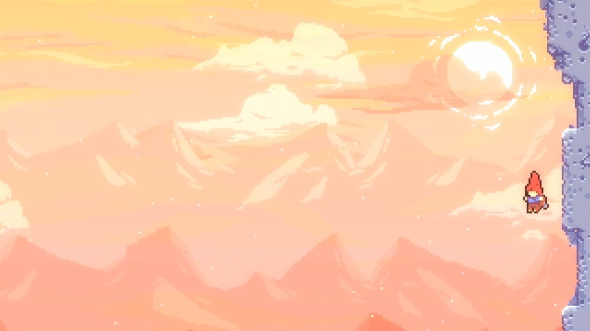
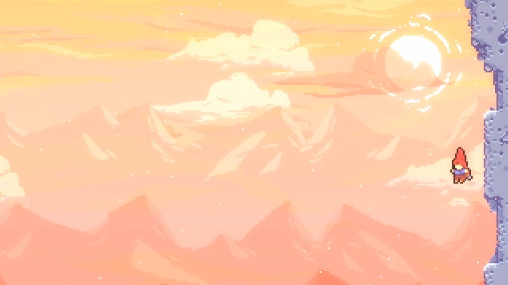
Another inspiration of mine was the map "Glyph" by marshall h / BeefyUncle. Alongside "The Climb", this map is another one of my favorites. The music is ethereal, memorable, ambient and supplements the atmosphere of the map extremely well. Said atmosphere is beautiful, and does a lot of the heavy lifting when it comes to the story and vibe of the map. The immersive backgrounds and foreground tiling unique to each area were especially inspiring for me. I was also heavily inspired by the puzzle style--specifically in finding papers with decodable symbols scattered across the map. Plus, marshall's "Shroom Helper" addon really allowed my map to be the best it could be, with color grades, reality distortion fields, and especially the book interaction used to show the secret pages I used.
Undergrowth's completion sticker.

I started this map in the latter half of 2021, although some of my files go all the way back to March. My experience with mapping up to that point was moderate, and although I had partially finished a map for myself, I had never published a finished map before.
For the most part, I went about creating the map in order, from the first room you encounter to the last. There were a few scrapped rooms, but most rooms stuck around and morphed their shape over time due to playtester and captain feedback. I focused not only on the gameplay, but on the shape of the structures I was building, in order to create a sense of scale as you climb around this giant ruin. I also nailed down the color grades early, as those would be defining features of my map.
The gameplay was largely developed for my own tastes. Spike jumps, stamina puzzles, and advanced tech. The tech I used was essentially what I was good at, such as neutral jumps, reverse hypers/supers, and wallbounces. I find these techniques to be the most fun, and I used them liberally. This also helped to minimize the amount of gimmicks or other mechanics I used in my map. Undergrowth features only a smattering of dash crystals, keys, touch switches, breakable blocks, and springs. I really focused on the movement of Madeline and allowing the player to find a path through these claustrophobic and spiky spaces.
There were some parts of the process unrelated to mapping to do as well, such as making my own completion sticker (seen above). This is awarded to those who complete the map, and I made it using Medibang Paint Pro, a free art program. I am very happy with how it came out and I feel that it represents my map well. The vines and moon are symbolic of the beginning and end of the map, from the lowest caves to the highest moon.
Also, since this was a collab, we had to make a "Heartside" room. "Heartside" is one final test for each difficulty level, where each map features its own room strung together to form the ultimate challenge. This heartside room combined a lot of gameplay from Undergrowth itself with a focus on verticality. I also hid some fun designs in the tiling too, and one easter egg relating to my profile picture (at that time) that you can find in the GIFs below ;)
One last thing to cover is the map entrance, which I was invited to decorate myself since my map has such a intricate tiling and deco style. I feel that I was able to integrate my style well with the surrounding lobby area, especially as my map was put far underground in a dark vegetated cave!
Overall, although I wasn't new to mapping, I still had a lot to learn in terms of accessibility for those of all skill levels--essentially polishing my gameplay and deco as much as I could for the public rather than just for myself. It was a lot of work, but I had a lot of support from those who playtested my map, and the captains who oversaw the mapmaking process.
As a bonus, here are some views of Undergrowth in the editor:
 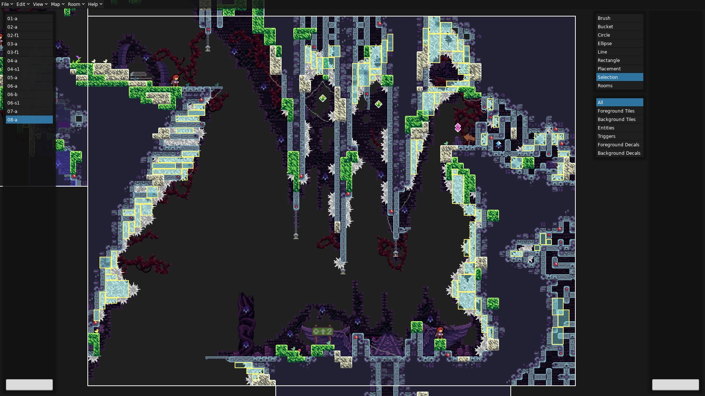
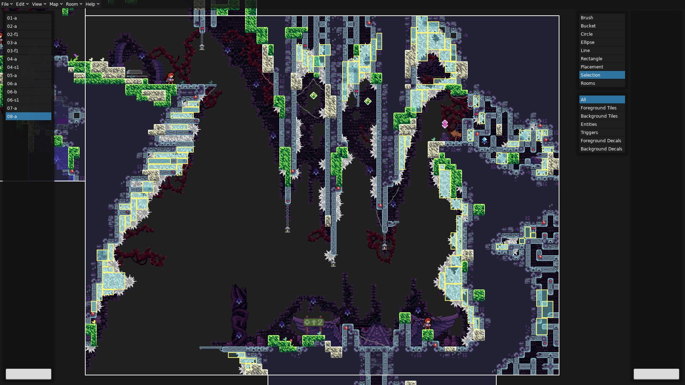


Undergrowth Heartside
In the first section of the map, Madeline comes across an overgrown ruin deep underground. Was it a lost city? A shrine? She explores through the vegetation to find out, but it's a tricky journey. She must save her stamina to climb through dense electrified vines, and tactfully jump across large chasms. My favorite room in the map is here--namely the 2nd room where at first, the solution is not obvious. The way up is too high to reach, until you realize a super will gain enough height to make it to the spire above you. Now, you must conserve stamina, retrieve a double dash crystal, and return where you came from to take the correct path out of the room.
The next section of the map is the transition from the green "outside" to the purple "inside", which I used another color grade for. After retrieving a key to enter the main ruins, the map gets darker, yet it allows much more space. It feels like space too--it's low gravity as you get closer to a mysterious pulsating core. It's an eerie place with floating blocks, largely devoid of vegetation. Instead, spikes penetrate the walls heavily, a guarded fortress now in disrepair. This area is super atmospheric, but that combined with its size meant it was the hardest to make for me. But luckily, as you'll see, I knew exactly how I wanted the ending.
The final section of this map is up. All the way up to the surface, with only a slight detour for a key. This section has claustrophobic moments that (like the previous section before), open up into a feeling of relief and--this time--escape from the underground. The 2nd to last room is free of essentially all danger, allowing you to breathe and appreciate how far you've come, before finally you pop out at the top.
This final room was fun to make, especially since it was so different from the rest of the map. With no music, this island provides a space for contemplation and relaxation, especially after a silver berry. The pier was a fun addition, and the buoy just made sense to go there--a final something to nod to the player that I appreciated them for exploring every inch of my map.
Honestly, there's a lot more I could talk about that isn't enough for full paragraphs. So, I'll just leave them here:
The structure you see at the very beginning of the map is very similar to the one you enter out of at the end.
You can actually see a broken version of the bird statue as early as the 2nd room.
Speedrunning tip! You can actually get to the strawberry room you'd normally get to with a double dash crystal without it. Look for a wallbounce along the right spiked wall. This was intentional to save you a trip back and forth through the claustrophobic crouching section :D
Why are there birds deep underground? I, uh... don't know! And how did a bird statue get down there anyway?
This map could have been intermediate difficulty but I loved neutrals too much.
I made and placed a bunch of tiny little crouching Madeline engraving decals that I don't think anyone's ever noticed. I put them in comf spots (1 tile gaps) all around the map. Maybe you can find them all?
The final map's difficulty is Green Advanced, which means it involved advanced movement techniques, but is one of the easier Advanced maps. And even now, 3 years later as of writing this, I am super happy with it and my experience with Celeste's amazing community!
Gameplay


 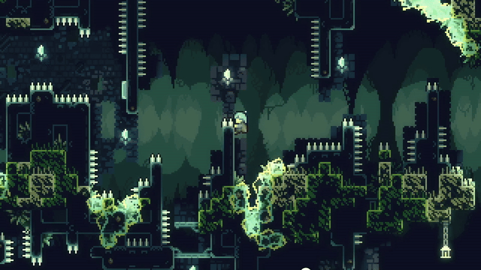
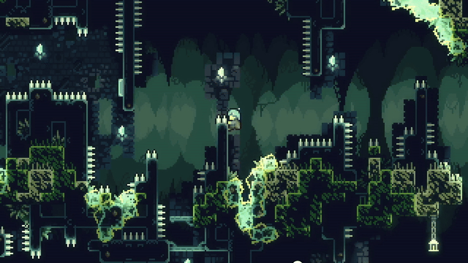


 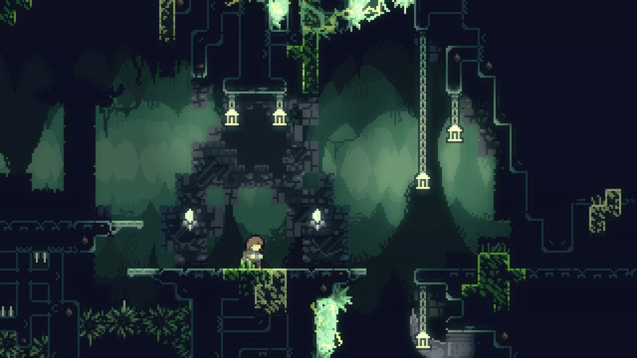
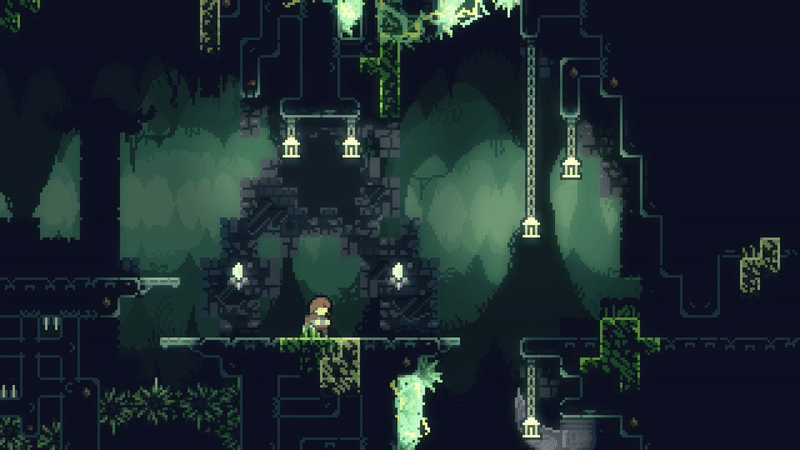
 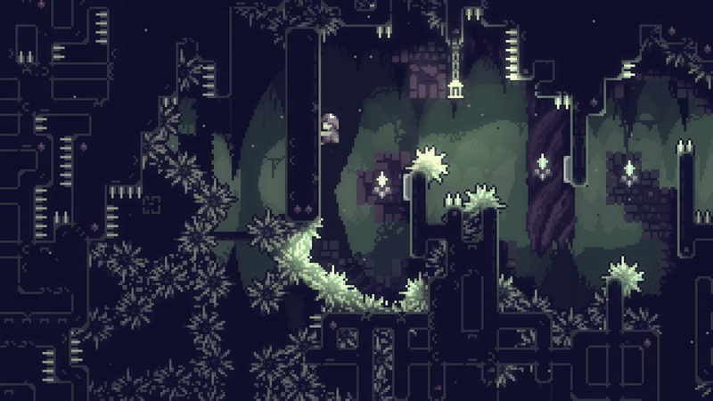
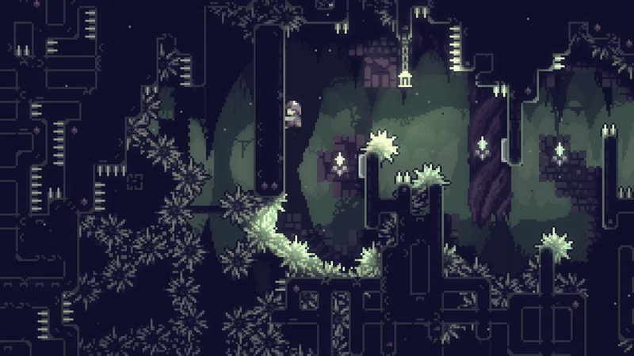
 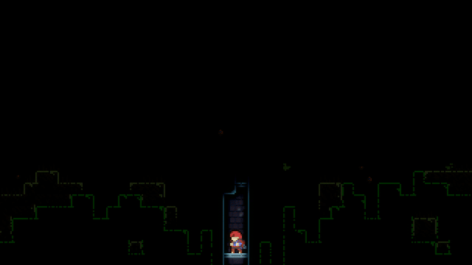
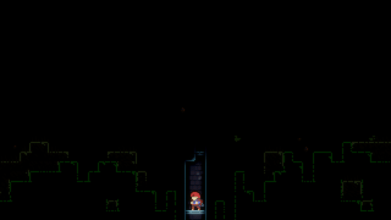

Without Madeline


 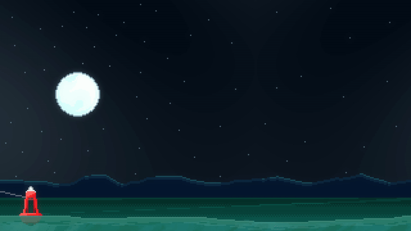
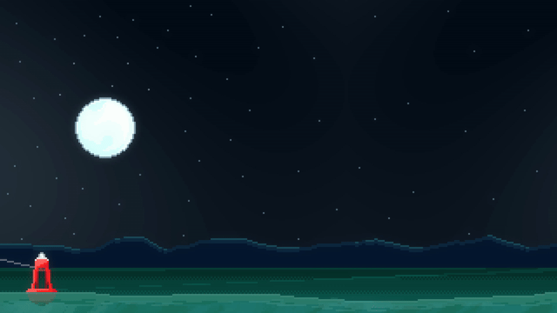
Undergrowth Heartside


Unused Assets & Rooms
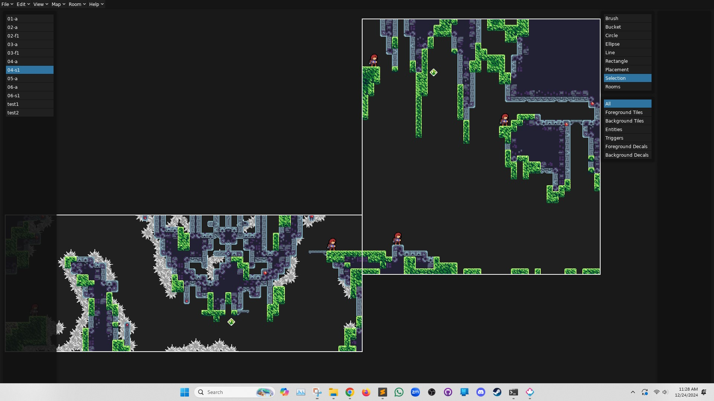
 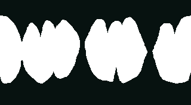
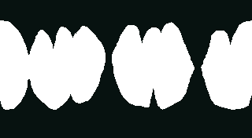


Music: Bipmo Bopmo
Playtesting: Calamay, Lollyde
Captain: Oppen_heimer
Special Thanks: globglogabgalab, Holly, max480, RealZeb